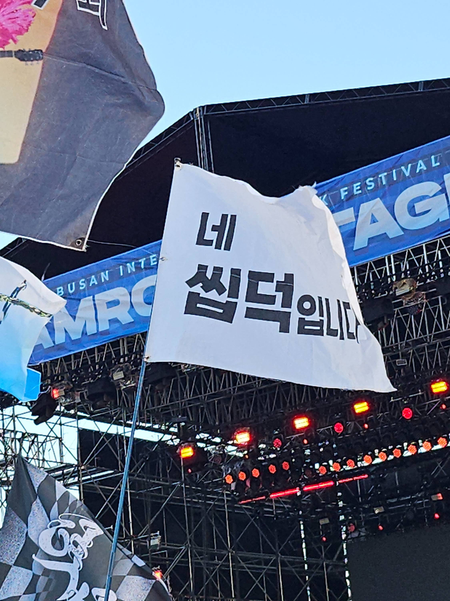
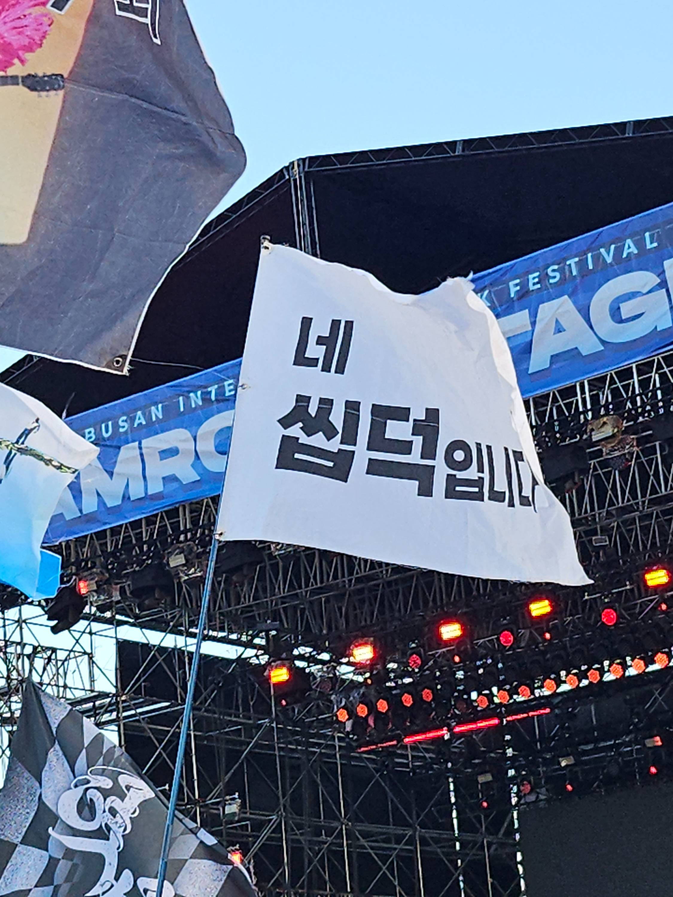

활자


<활자>
투박하지만 솔직한 표현들이 많아서 좋았다. 글과 미디어를 포함한 매체는 표현에 근본적으로 표현과 커뮤니케이션을 위한것이다. 만일 커뮤니케이션 이라는 행위 속에 본질적으로 표현되고자하는 속뜻과 이를 드러내는 매체라는 겉표현의 이중성을 받아들인다면, 내 눈에 지금 현대의 커뮤니케이션은 너무 고도화된 나머지 본뜻을 말하는 법을 잊어 버린것 같아보이기도 한다. 아니 본인조차도 본 뜻이 있었는지 알아차리지도 못하는 경우가 많아 보인다. 스웩을 하면서 왜 스웩을 하고 있는지, 시크함을 유지하면서 왜 차가워야 하는지 알지 모른다.
그러다 보니 투박하지만 솔직한 본인을 말할줄 아는 사람들이 그립다고 많이 느낀다. 지금껏 연락이 잘 되는 몇 안되는 지인들의 공통점은 그들이 잘난 사람이 아니라 개인주의자라는 것이다. 사회적인 표현을 적극적으로 익히며 살아가는것이 아니라 본인이 잘하는 영역에서 본인의 개성이 유지될 수 있는 공간에서 개인적인 자존감이 유지될수 있는 방식을 찾아 그 안에서만큼은 권리와 책임을 지며 커뮤니케이션 하고 있다. 우리 각자는 상대방이 잠이 안 올때 언제나 팔베게하고 재미있는 얘기 해줄 사람이 아니다. 낭만 없는 이야기이긴 하지만 관계와 역할에 대해 솔직한 인정을 하고 사랑 대신 건강을 기원할때 예상치 못한 감사함도 싹틀 수 있는 것 같다. 불특정 다수에게 사랑을 표현하는 골목가게 사장님부터 이리저리 친절하게 길을 알려주는 행인들까지 솔직한 언어가 주는 친근함을 오랜만에 느껴서 좋았다.
투박하지만 솔직한 표현들이 많아서 좋았다. 글과 미디어를 포함한 매체는 표현에 근본적으로 표현과 커뮤니케이션을 위한것이다. 만일 커뮤니케이션 이라는 행위 속에 본질적으로 표현되고자하는 속뜻과 이를 드러내는 매체라는 겉표현의 이중성을 받아들인다면, 내 눈에 지금 현대의 커뮤니케이션은 너무 고도화된 나머지 본뜻을 말하는 법을 잊어 버린것 같아보이기도 한다. 아니 본인조차도 본 뜻이 있었는지 알아차리지도 못하는 경우가 많아 보인다. 스웩을 하면서 왜 스웩을 하고 있는지, 시크함을 유지하면서 왜 차가워야 하는지 알지 모른다.
그러다 보니 투박하지만 솔직한 본인을 말할줄 아는 사람들이 그립다고 많이 느낀다. 지금껏 연락이 잘 되는 몇 안되는 지인들의 공통점은 그들이 잘난 사람이 아니라 개인주의자라는 것이다. 사회적인 표현을 적극적으로 익히며 살아가는것이 아니라 본인이 잘하는 영역에서 본인의 개성이 유지될 수 있는 공간에서 개인적인 자존감이 유지될수 있는 방식을 찾아 그 안에서만큼은 권리와 책임을 지며 커뮤니케이션 하고 있다. 우리 각자는 상대방이 잠이 안 올때 언제나 팔베게하고 재미있는 얘기 해줄 사람이 아니다. 낭만 없는 이야기이긴 하지만 관계와 역할에 대해 솔직한 인정을 하고 사랑 대신 건강을 기원할때 예상치 못한 감사함도 싹틀 수 있는 것 같다. 불특정 다수에게 사랑을 표현하는 골목가게 사장님부터 이리저리 친절하게 길을 알려주는 행인들까지 솔직한 언어가 주는 친근함을 오랜만에 느껴서 좋았다.


 
